순서 기다리지말고 쭉 이야기해보고 10분 정도 보고 바로 시작해봅시다
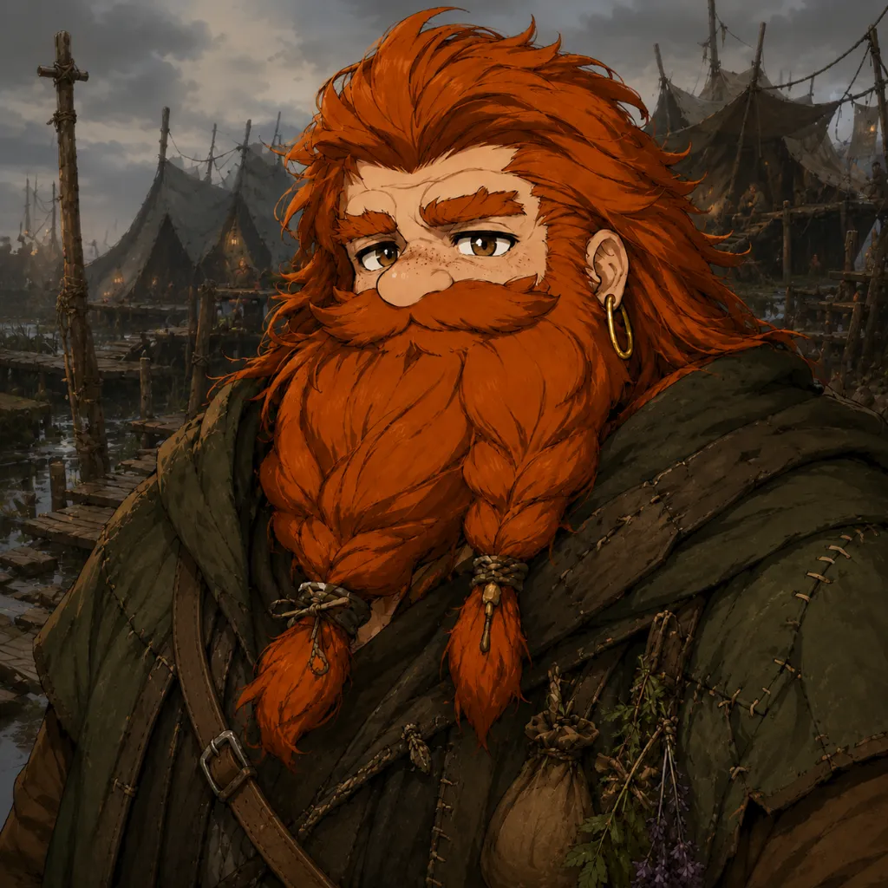
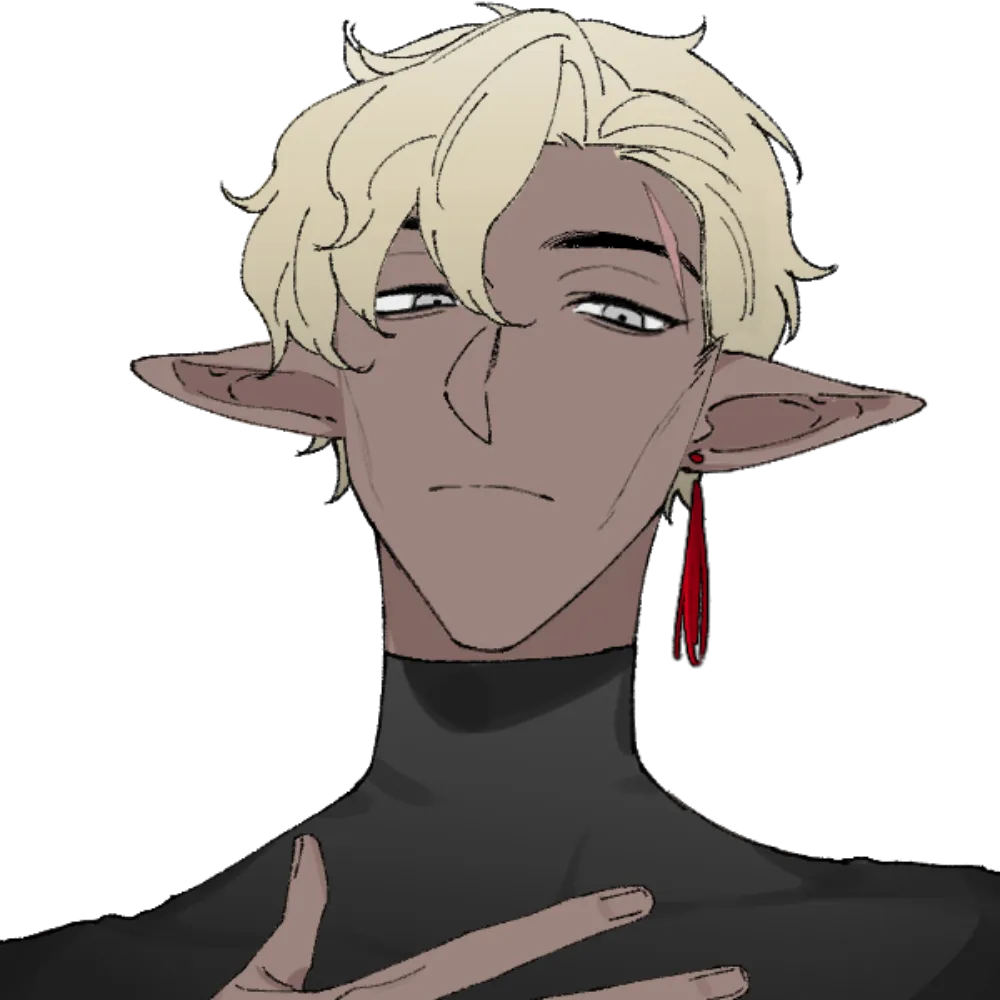
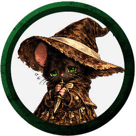
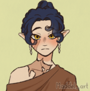
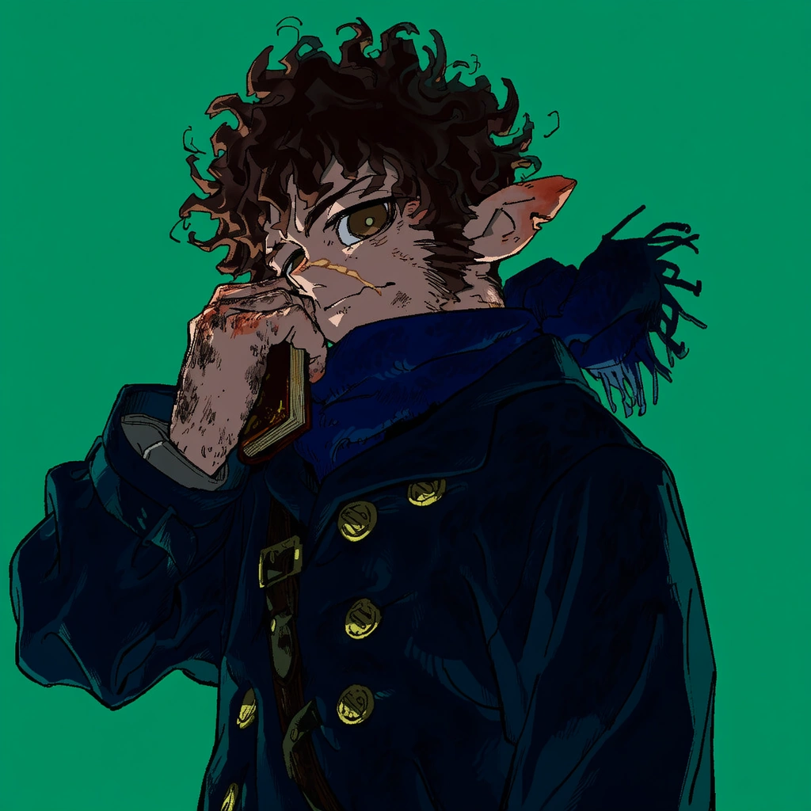
오옷 감사합니다
아무래도 페이 관련 징후가
높은 지역이 될듯
기본적으로 하프엘프가 좀 많은 지역이라면
그에 맞춰서 좀 장수마을이 되겠습니다
이종족 파티군요
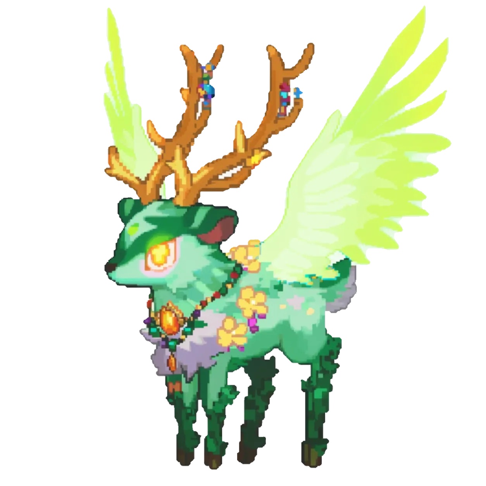
까먹고잇었어요
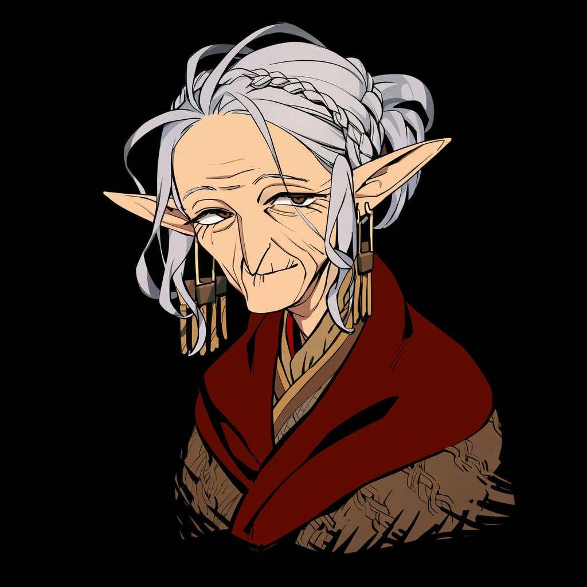
인간인 것인가
넵 어머니가 엘프입니다!
마을과 바깥을 연결하는.. 그런 인물입니다
오늘 세션의 도입부가 될 예정이죠
행인이 많은 곳은 아니라 여관은 없고 하숙? 이 될 수도 있겠군요
아
여관 있네
ㅋㅋㅋ
숙식을 해결하는걸로 하겠습니까?
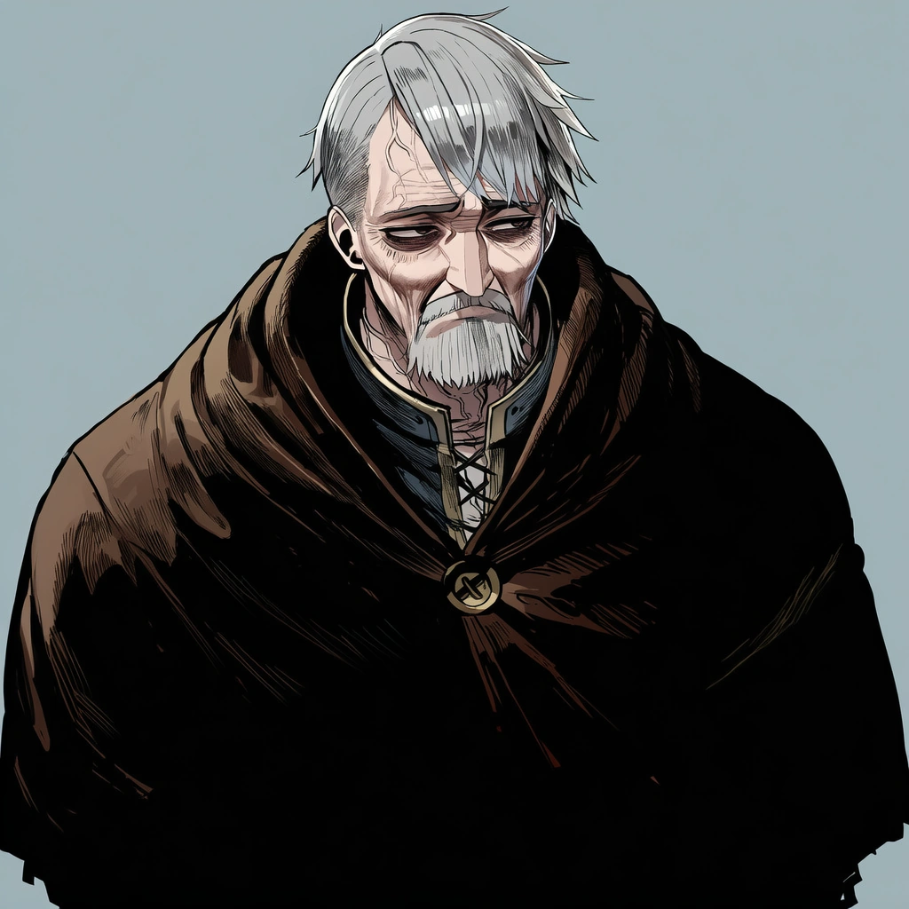
이 스토리는 어떤 의미에서 이율배반적이네요
벨로도나를 거르고 부탁했으니말입니다
그래서 담보르는 '마법학교'에서 마법사 한명을 대려오기로 되어있었으니까요
허나 예상 이상으로 크로스로드보다 큰 도시는 가본 적이 없다고 합니다
"이러다 여러분들도 전부 농부가 되는거 아닌가 모르겠습니다!"
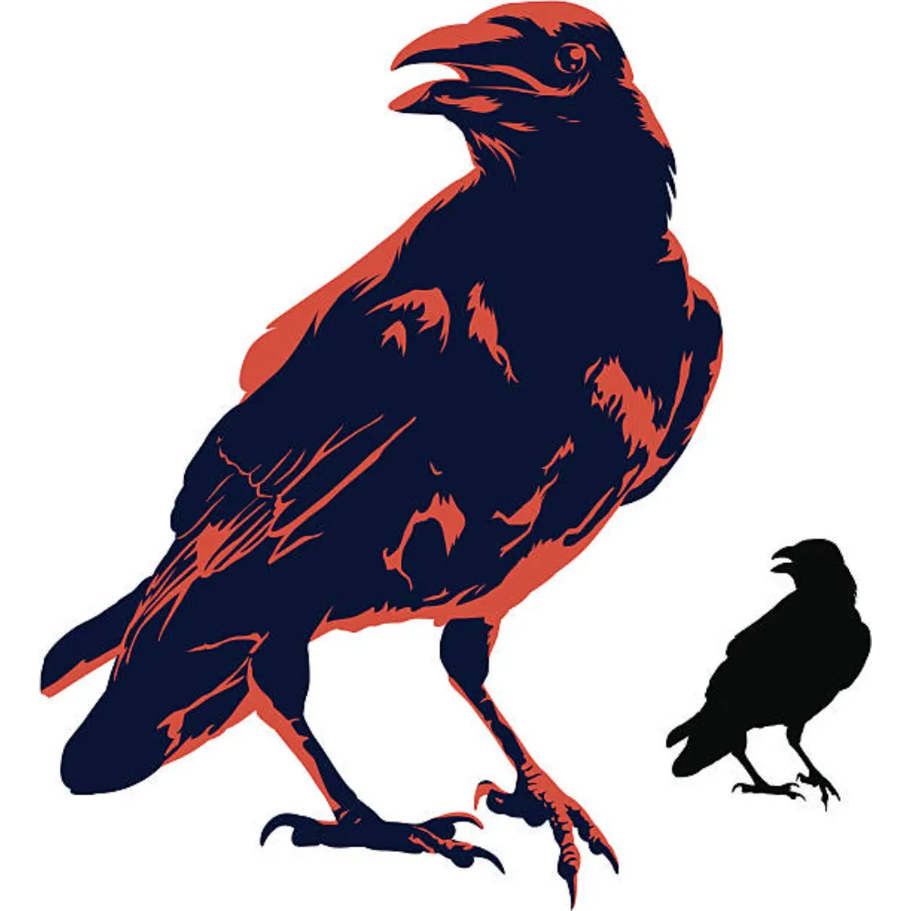
"거기서 이상한 소리가 들린다는 소문이 있지 말입니다"
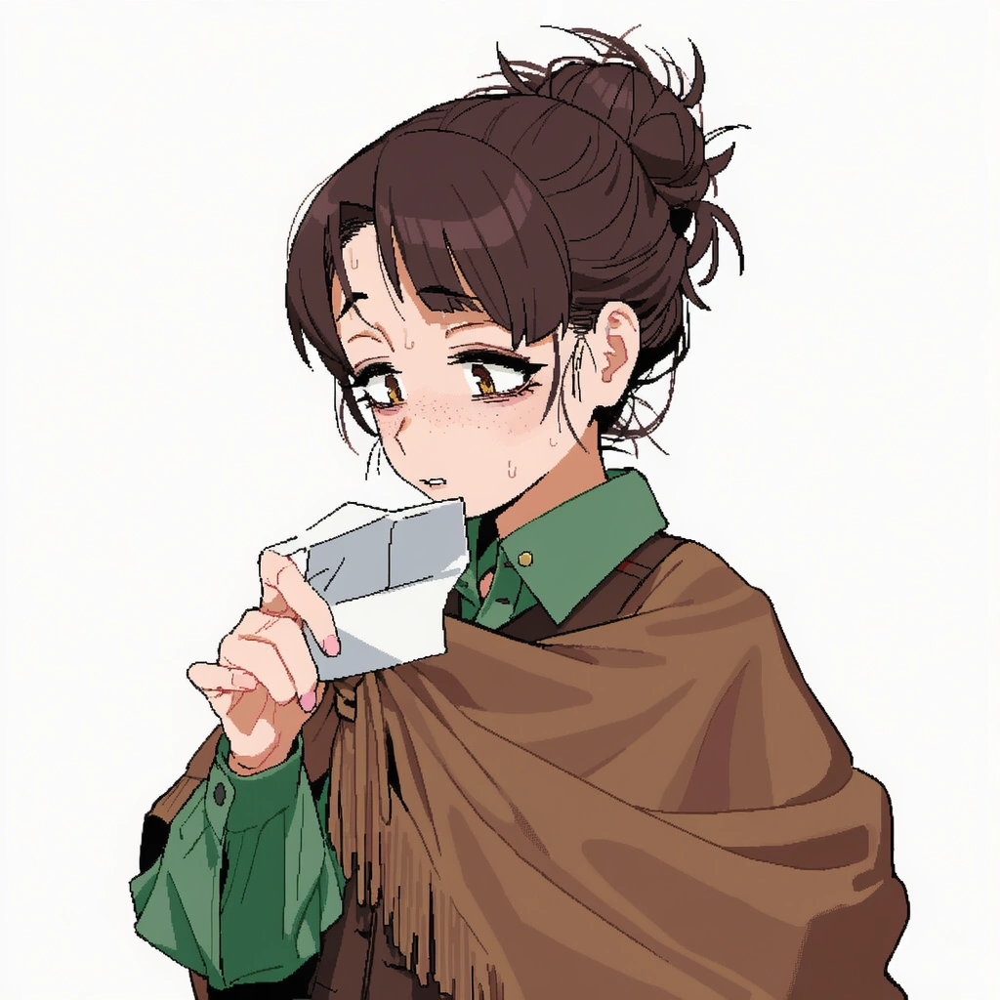
"분명히 마법사를 대려와주겠다고.."
"무슨 일이 생긴게 분명해요!"
비전학
아차
제가 사실 가이던스에 대해서는 좀 안빡빡합니다
그냥 발더게 처럼 옆에 있으면 상대방이 불허하지 않는한은 막 가져가도 됩니다.
Guidance
비전학
6
네 로웬도 굴려보세요
아니지 사실
로웬보다는
아니 로웬이군요
할다론이 의외로 비전학이 없군요
비전학
5
클로브 한번 굴려보세요 시트 열어서 (토큰 더블클릭하면 나옴)
거기서 비전학 눌러보시면 됩니다
비전학
9
조사
4
여기에 마크 보이나요?
넵
그리고 그 옆에는 커다란 마차가 박살나있는데 이 이미지가 아니군
그 옆에는 부서진 마차가 보입니다
폭발한 흔적은 되게 묘하군요??
푸릇푸릇한 흔적이 남아있습니다
그리고 마차에는 사람이 안보입니다
그리고 한쪽에서는 발자국이 보이고 발자국에는 누군가가 상처입은듯
핏자국 같은게 보이는군요
폭발현장에는 무언가 가루? 같은 것이 보입니다
이것이 뭔지 알아보는데 당신은 '이점'을 받을 수 있겠네요
다만 이점은 니콜라스
비전학
22
비전학
21
아니다 이걸 생존으로 굴리는건 묘하겠습니다
운동
17
"이건 그 광석을 가루로 만든거죠!"
인간 발 모양은 아니란 점입니다
자 그러면 여러분 또 다른 곳을 한번 뒤져보나요?
통찰
3
통찰
18
확산정보로
무슨 말씀이시죠
"이런걸 어떤 녀석들이 훔쳐간게야!"
발자국을 추격해볼 수는 있겠군요
마차 아래에서 뭔가 소리가 들립니다
끄으으으응....
누군가가 깔려있습니다!
정신을 잃고 신음소리만 내고 있군요!
운동
9
머쓱
+2가
제일 높은거같은데요
ㅋㅋㅋㅋㅋㅋ
"헉헉... 여러분은..?"
"저희는 친절한 사람들이에요!"
"아 폭발.. 폭발 그거죠"
"아 맞다. 제 이름은 도덴이에요"
"잘 부탁해요. " 라고 악수를 청합니다. 이 남자 뭔가 오락가락하는군요 몸도 비틀거리고 말입니다
정신도 없고 다친 것 처럼 보이는군요
"아 너무해"
Cure Wounds
피해: 15
그러면..
"헉헉.. 그렇군요 그래서 물어볼게 있다고..?"
"제가 터트렸어요 "
"공포용으로 쏜다는걸 실수로 너무 큰 위력을 쏴버렸는데"
"죽을 뻔 했어요"
"아얏 아얏 아프다"
"어쨋든.. 근데 상인씨가 안보이네요?"
@ 혀를 끌끌차며 도덴을 치료한걸 후회합니다
Guidance
생존술
20
"그 사람 위독한거 아닙니까?"
(내츄럴 말고
쭉 따라가면.. 한 두시간 정도를 여러분은 흔적을 따라가야했습니다
그러면 저 멀리에...
뭔가가 보입니다. 뭔가 사람이 사는? 그런구조물 같은게 보이는군요
여기서부터는 이제 좀 주의해야할 것 같습니다
누군가와 마주칠 수도 있으니까요
저 사실을 알 수 있게된겁니다
패밀리어를 날려서 보는거 맞죠?>
"그러면... 저 앞의 녀석들을 물리치고 가야되는겐가..?"
Guidance
캐릭터가 이 근방 지역소식? 같은거에 능할 것 같으면 한번 굴려봐도 됩니다
이거는 지역소식? 보다는 생태? 느낌에 더 가까울 것 같습니다
클로브가 더 굴려볼만할듯
역사학
20
늪에서 살아가는데 호전적이긴하나 마구 습격하는 그런 자들은 아닌걸로 알고 있습니다. 지역 리자드포크가 무차별 약탈 부족은 아닌데 조금 이상하군요
복붙;;;
"용언 좀 할 줄 아는 친구 있는가?"
"일이 틀어지더라도 할다론 씨 정도의 실력자라면..."
죄송합니다 제가 작성하는게 좀 느려서;
"대화를 해보겠다면 조금 용기를 빌어주지!"
Guidance
(다른 기술 원하시면 다른 기술 드릴게요
"잘 지냈나 글렌!"
아니면 ???
그런거라면 요건 선언으로 이어지면 좋을 것 같네요
대화를 시도하겠습니다.
어쩔 수 없는 순간이란게 있는 법이지만서도
아니며 클로브가
한번 어떻게든 대화해볼래요?
이걸 rp로 녹여주면 좋을 것 같네요
"흐음... 말이 잘 통할것 같진 않긴 하다네"
"이유가 있을거에요! 아마도요..?"
(가이던스를 할다론에게 유지
그러면 알아들을 수 없는 소리. 하지만 할다론은 알아들을 수 있는 말로 말합니다
그러더니 리자드맨 하나가 들어가는 모습이 보입니다
할다고 짱
"아.. 왈든 분들.."
"저 자들은 저를 치료해준다고 대려간 것 같아요. "
"식량 정도 뜯어가긴 했는데 죽일 생각까진 없다고 하더군요"
"당분간 절식을 좀 해야지 뭐..."
"잠깐 안으로 들어가실래요?"
"여러분을 만나고 싶다는 사람이 있답니다"
"음.. 아무것도 묻지말고 한번 만나주세요"\
"밖에 혼자 있으면 심심할테니까 말이야"
"들어가보면 아실거라 생각합니다"
"무셔"
일단 들어가보면 내부가 작지도 크지도 않습니다
산적보다는 많지만
무장한 자들도 보이지만
몸이 성한 자가 많아보이지 않습니다
만약 습격했으면 여러분에게 그리 불리하진 않았겠군요
"도덴씨 말입니다"
"자기를 만나고자 하는 사람이 있다고 했던가?"
"리자드포크들이 우릴 습격하려고 한건 맞아요"
"원래 이들은 수렵이나 낚시를 했었는데"
라고 말하며 걸어갑니다
"살던 곳에서 못살게된 모양이더군요"
"그래서 부락민들 대다수가 지금 굶고 있다고 저한테 그러더군요."
그런가...?
그는 큰 상처를 입었는지 누워있습니다ㅣ
"지금은 쇠하셨지만 가능하면 화나게 하시면 안돼요"
"늪지대에 대해서 조사를 원하신답니다."
"저희의 어디를 보..보고요?"
"...."
(짧휴를 하길 원한다는 뜻입니다
짧은/긴 휴식 시 지혜 수정치 수(최소 1)의 크리처를 돌본다. 대상은 2d6 + 드루이드 레벨만큼 임시 HP를 얻고, 다음 긴 휴식까지 황홀(enraptured) 상태가 된다. 황홀 상태는 공포 내성에 이점.
안식의 보살핌 - Restful Care
피해: 13
의학
6
우어엉?
그게 뭡니까
"틀림없이 사지가 달린 자였다고 하네요"
" 누구인지는 알 수 없지만 용맹하지만 동시에 잔인한 자였다고 합니다.
"지금 다친 사람들 대부분이 그 빛에 노출되어 피부가 썩었다고 하는군요":
뿔난 자의 정체도, 그 빛도 무엇인지 모르겠습니다
Guidance
의학
12
Guidance
(살려주세요 본인한테쓰고싶었어요)
그렇네요 굳이 표현을 하자면.. 오염..?
그러한 저주 같은 느낌이 듭니다
할다론 미스바르 우선권
5
4시간 정도를 걸어가야 했습니다
그리고 늪이 다가오면 다가올 수록 이상함을 느낍니다
풀 한포기 나지 않고
동물이나 그런 것도 잘 보이지 않습니다
이곳에 진입하자마자 기분나쁜 느낌을 감출 수 없습니다
Guidance
물론 늪도 끈적입니다 하지만 무언가..
바닥에 타르를 연상시키는 그러한 느낌의 액체가 뿜어져 나오고 있습니다
그리고 주변에는 철로 만들어진 배럴 같은 것이 널부러져 있습니다 그 안에서 그 검고 더러운 액체가 꿀럭꿀럭 나왔던 것 같습니다
(배럴을 살펴보고 액체를 장갑 낀 손으로 찍어서 냄새를 맡아보거나 하는 식으로 분석해봅니다.)
조사
23
어떤 것을 의도했는지는 모르겠지만 하나 확실한 것은
이렇게까지 오염된 곳에 살 수 있는 사람은 여러분 중엔 없다는 점입니다
그리고 저 철 배럴을 보면 이 오염은 다분히 의도적인 것 같군요
Hunter's Mark
곡도
뿔난 투구의 전사뿔난 투구의 전사 AC: 17
니콜라스 크라프트 우선권
9
로웬 우드워드 우선권
4
볼릭 모스비어드 우선권
13
클로브 우선권
11
지오 (레이븐 패밀리어) 우선권
18
글렌(볼릭) 우선권
13
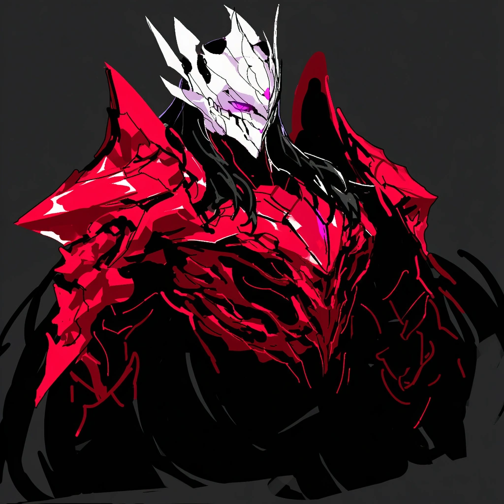
뿔난 투구의 전사 우선권
19
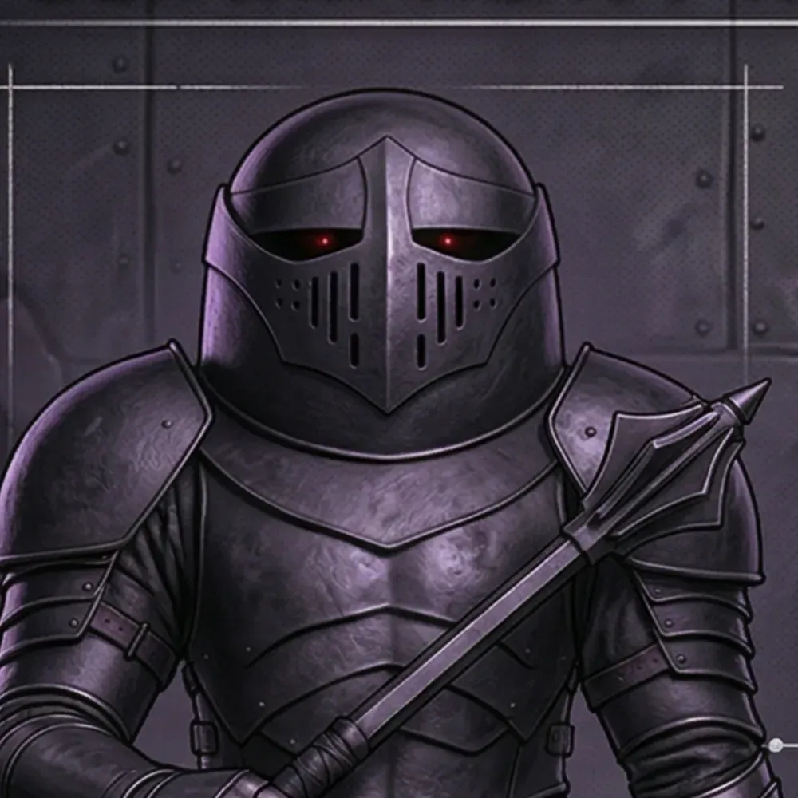
정체불명 우선권
2
정체불명 우선권
7
갑자기 전투가
그들은 여러분 코앞에 뿅 하고 튀어 나옵니다
Longsword
할다론 미스바르할다론 미스바르 AC: 15
Longsword
할다론 미스바르할다론 미스바르 AC: 15
피해: 4
튜토리얼격이지만 난이도는 그렇지 않습니다
타게팅이됩니다
타게팅 상태로 공격하면 자동적용이됩니다 모두 화이팅!
Produce Flame
민첩 내성
25
Produce Flame: Hurl Fire
뿔난 투구의 전사뿔난 투구의 전사 AC: 17
Poison Spray
정체불명정체불명 AC: 13
피해: 1
(하지만 잘하셨습니다
Eldritch Cannon
Eldritch Cannon
정체불명정체불명 AC: 13
Dagger
클로브클로브 AC: 11
피해: 8
곡도
뿔난 투구의 전사뿔난 투구의 전사 AC: 17
Moonbeam
피해: 5
건강
18
Starlight Step
Dagger
로웬 우드워드로웬 우드워드 AC: 13
피해: 12
양팔을 앞으로 쭉 뻗습니다
빛
DC 12 : 내성 굴림
피해: 13
민첩 내성
14
민첩 내성
19
민첩 내성
17
빛
DC 12 : 내성 굴림 : 내성 굴림 : 내성 굴림
피해: 14
Moonbeam
DC 13 : 내성 굴림
피해: 4
@ 히트 메탈을 쓸 생각
묘하게 다릅니다
분명 금속같은데 금속이 아니라
그것만큼은 금속같습니다
Heat Metal
Heat Metal
피해: 10
Heat Metal
DC 13 : 내성 굴림
피해를 입기시작합니다
곡도
뿔난 투구의 전사뿔난 투구의 전사 AC: 17
Witch Bolt
정체불명정체불명 AC: 13
True Strike
Repeating Shot 권총
정체불명정체불명 AC: 13
피해: 12
Eldritch Cannon
정체불명정체불명 AC: 13
Dagger
클로브클로브 AC: 11
건강 내성
5
(살고싶어.
그의 검격은 정확하고 깨끗합니다. 훈련된 전사임이 분명하군요
건강 내성
6
건강 내성
14
Thunderwave
DC 13 : 내성 굴림 : 내성 굴림 : 내성 굴림
피해: 7
건강 내성
14
그 틈에 활로를 찾아서 이동하는 로웬
큰 충격을 받았는지 비틀거리지만
Dagger
로웬 우드워드로웬 우드워드 AC: 13
5이상 나오면 빛 무기 재충전
1d6
6
민첩 내성
11
민첩 내성
16
빛
DC 12 : 내성 굴림 : 내성 굴림
피해: 12
Moonbeam
DC 13 : 내성 굴림
피해: 11
Heat Metal
Heat Metal
피해: 5
Heat Metal
DC 13 : 내성 굴림
봉 Shillelagh
정체불명정체불명 AC: 13
피해: 7
"떼잉 이놈아!" 하며 정체불명 하나를 쓰러뜨립니다
Witch Bolt
뿔난 투구의 전사뿔난 투구의 전사 AC: 17
Witch Bolt
뿔난 투구의 전사뿔난 투구의 전사 AC: 17
Force Ballista
정체불명정체불명 AC: 13
True Strike
Repeating Shot 권총
정체불명정체불명 AC: 13
피해: 7
여러분을 공격해옵니다
Guiding Bolt
피해: 10
1d6
3
Longsword
할다론 미스바르할다론 미스바르 AC: 15
피해: 11
Longsword
할다론 미스바르할다론 미스바르 AC: 15
피해: 4
Heat Metal
Heat Metal
피해: 12
Moonbeam
DC 13 : 내성 굴림
피해: 15
Heat Metal
DC 13 : 내성 굴림
(무섭네요
봉 Shillelagh
뿔난 투구의 전사뿔난 투구의 전사 AC: 17
피해: 11
(ㅠㅠ
문빔에 익었음
정체불명의 자들이군요
분명히 사람같아보입니다
그의 무기나 갑옷은 전부
무언가 키틴질의 재질 처럼 느껴집니다
그리고 그 갑옷에서도 똑같이 그 오염이 느껴집니다
지면에 뿌려둔 오염과 비슷한 느낌이 듭니다
작동하는 방법도 모르겠고 얼마나 위험한지 모르겠군요 이런 마법 무구에 대해서 잘 아는 사람이 조사해볼 필요가 있을 것 같습니다
하나 확실한건 이것을 만든 자들은 아득히 뛰어난 기술을 가진 것 같습니다
Replicate Magic Item: Select Plans
아무래도 그러한 환경으로 만들어내는 것 같군요
이것이 뭘로 이렇게 만들어내는지
어떻게 해야 이것을 되돌릴 수 있을지는 장기적인 연구가 필요해보입니다
Replicate Magic Item: Select Plans
Replicate Magic Item: Create Item
그리고 저 검은 물질도 샘플로 수거해갈 수 있겠습니다
보통 태워버리면 모두 해결할 수는 있을 것 같습니다. 하지만 늪이라서 불이 잘 붙지는 않네요
그리고 저 검은 물질만 탈 것 같진 않군요
어쩌면
이 오염된 생태가 말입니다
Guidance
(와우
Guidance
통찰
23
그러면 근처에서 꿈툴거리는 무언가를 발견할 수 있습니다
벌레인가? 하지만 저 벌레는 용케 이 검은 물질이 있는 토양에서 죽지 않고 살아있군요
여기 살아있는 게 있는데.
Guidance
자연학
9
오늘 세션은 여기까지!
False Life
피해: 7